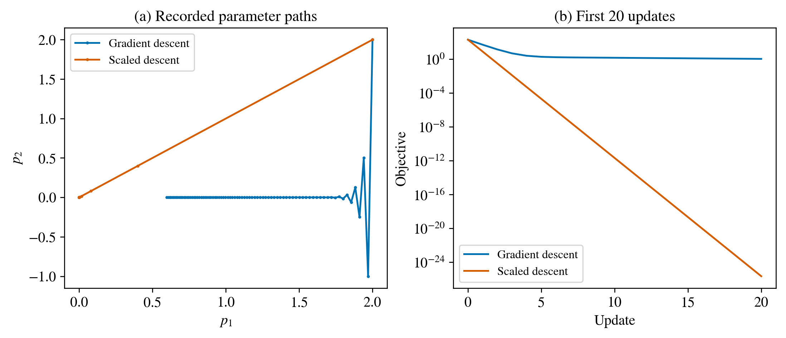
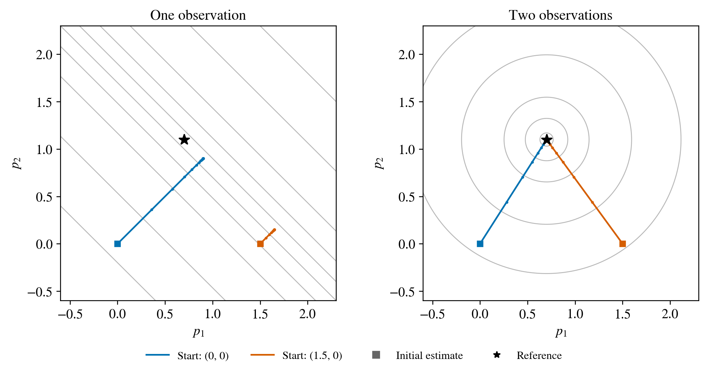
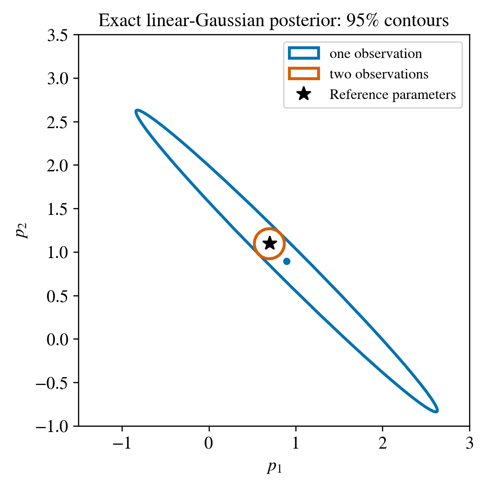

Why a correct gradient can give slow or ambiguous recovery#
The gradient is local information#
For a small increment, \(J(\theta+\Delta\theta)\approx J(\theta)+\nabla J^T\Delta\theta\). A negative dot product predicts a local decrease near the current operating point. A distant initial particle can produce a different crack branch or have little influence on the selected observations.
To isolate conditioning, consider \(J(p_1,p_2)=\frac12(p_1^2+100p_2^2)\). The curvature in the second direction is 100 times larger. A step small enough to be stable in that direction can move slowly in the first direction.
The plotted updates are \(p^{k+1}=p^k-\alpha P\nabla J(p^k)\), starting from \((2,2)\). Plain descent uses \(P=I\) and \(\alpha=0.015\). Scaled descent uses \(P=\mathrm{diag}(1,0.01)\) and \(\alpha=0.8\). The latter is the inverse Hessian of this known quadratic, so both coordinates contract by \(0.2\) per update. Plain descent contracts the first coordinate by \(0.985\) and multiplies the second by \(-0.5\), explaining its slow progress and zigzag. These choices isolate conditioning in this prescribed quadratic.
{kind=link}

Figure 8 Gradient descent and diagonally scaled descent on the same quadratic, using the same initial state. The objective panel shows the first 20 updates; the paths and retained data include 80 updates. Scaling is exact for this teaching quadratic; fracture preconditioners require a corresponding operator and convergence analysis.#
Normalising coordinates removes differences of units and admissible range. Differences of sensitivity can remain. A proposed sensitivity-based scaling must also avoid magnifying numerically negligible gradient components.
Two unknowns and one observation#
Let two nondimensional perturbations be \(p_1\) and \(p_2\), and measure \(y_1=p_1+p_2\). They can be regarded as a local analogy for a position/radius trade-off within a linear observation model. If \(y_1=1.8\), every point on \(p_1+p_2=1.8\) matches that observation.
The Jacobian is \(J_y=[1\;1]\). Moving along \((1,-1)^T\) changes neither the observation nor its least-squares loss. This is a null direction. Starting at different points can therefore lead to different parameter estimates with equally small loss.
Add a second observation \(y_2=p_1-p_2\). The combined Jacobian
has two independent columns. The pair \(y_1=1.8\), \(y_2=-0.4\) determines \(p_1=0.7\), \(p_2=1.1\) in this linear model.
We minimise \(\tfrac12\|J_y p-y\|^2\) using \(p^{k+1}=p^k-0.2J_y^T(J_y p^k-y)\) for 50 updates, from \((0,0)\) and \((1.5,0)\). The reference parameters are used to generate the synthetic observations and assess the estimates. Updates use the observation residual.
{kind=link}

Figure 9 Loss contours and recorded optimisation paths for one and two observations. The flat valley disappears when the added observation resolves its null direction. These teaching landscapes come from the stated linear observation models.#
What singular values tell us#
For \(J_y=U\Sigma V^T\), the columns of \(V\) describe parameter directions. The corresponding singular values describe the magnitude of observation change for a unit perturbation in those directions. Their interpretation depends on parameter units and observation weighting. A small singular value indicates a weak local direction; global uniqueness requires additional analysis of alternate parameter fits.
In a fracture experiment, compare observation times and loading cases with the same declared parameter coordinates. Repeated measurements of nearly the same response can improve noise averaging without resolving a missing parameter direction.
From ambiguity to uncertainty#
To quantify uncertainty, we need a probability model. In this teaching example, assume independent Gaussian measurement noise with standard deviation \(\sigma=0.1\) and a Gaussian prior \(p\sim\mathcal N(0,I)\). For the linear observation matrix, the posterior is exactly Gaussian:
To derive this, Bayes’ rule multiplies the prior density by the likelihood. Their negative log densities, up to constants, are \(\tfrac12p^Tp\) and \(\|J_y p-y\|^2/(2\sigma^2)\). Expanding and completing the square gives \(\tfrac12(p-\mu)^TC^{-1}(p-\mu)\), which identifies the covariance and mean above. For two parameters, the plotted ellipse is \((p-\mu)^TC^{-1}(p-\mu)=5.991\), the 95% quantile of a chi-square distribution with two degrees of freedom. Its axes follow the covariance eigenvectors. Their lengths scale with the square roots of its eigenvalues.
{kind=link}

Figure 10 Posterior contours containing 95% probability for the declared two-dimensional Gaussian model. The first observation leaves a broad trade-off direction. The second constrains it. Filled circles denote posterior means and the star marks the reference. With one observation, the prior selects a mean along the trade-off direction. With two observations, it shifts the mean slightly from the noise-free reference parameters.#
This is the exact conditional distribution for the specified linear Gaussian model. Applying it to an experiment requires checking the assumed noise model. Nonlinear fracture posterior inference similarly requires explicit priors, a likelihood, a sampling or approximation rule, and calibration; optimizer endpoints describe the explored attraction basins.
Exercise 1: distinguish two difficulties#
Compare the narrow quadratic valley with the one-observation example. Which has a unique minimiser? Which has an unobserved parameter direction?
Worked solution
The positive-definite quadratic has a unique minimiser but unequal curvature. The one-observation objective has an entire line of minimisers. Scaling can help the first problem; it cannot create the missing observation in the second.
Exercise 2: choose an additional observation#
Would \(y_2=2p_1+2p_2\) resolve the null direction of \(y_1=p_1+p_2\)?
Worked solution
No. Its sensitivity is parallel to the first row. Independent noise can make repeated measurements useful, while the matrix rank remains unchanged. An observation sensitive to \(p_1-p_2\) is needed here.
Exercise 3: interpret a far-start failure#
A fracture run passes local AD–FD checks but finishes with one particle far from its reference position. List two hypotheses and one diagnostic for each.
Worked solution
Weak observability can be investigated with weighted Jacobian columns and singular vectors. A restricted attraction basin can be investigated with predeclared initial offsets and verified loss slices. Neither hypothesis follows from the failed recovery alone. Keep the same physical model when comparing these explanations.